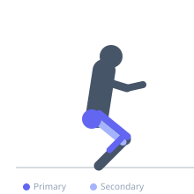

Exercise guide / Squat Jump
Squat Jump
The squat jump is a bilateral plyometric exercise in which the athlete descends to a quarter or half squat and then jumps as high as possible, focusing on maximum vertical displacement. Unlike the box jump, the squat jump lands back on the same surface, making it a continuous or repeated power exercise. It directly trains the explosive leg drive mechanics and vertical power output of the quadriceps, glutes, and calves, and is a foundational drill for athletes requiring vertical power.
Primary muscles
rectus femoris
vastus lateralis
gluteus maximus
gastrocnemius medial
Secondary muscles
biceps femoris long head
soleus
Stabilizers
gluteus medius
transverse abdominis
Equipment
No Equipment (Bodyweight)


Starting position
- Stand with feet shoulder-width apart. Arms at sides or hands behind the head.
Setup
- No equipment required. Adequate overhead clearance needed.
Steps
- Step 1: Stand feet shoulder-width apart.
- Step 2: Quickly descend to a quarter or half squat while swinging the arms back.
- Step 3: Explode upward as powerfully as possible, extending fully through the hips, knees, and ankles and driving the arms upward.
- Step 4: Land softly by absorbing through the ankles, knees, and hips back into a squat position.
- Step 5: Immediately repeat for continuous reps or pause between for maximum effort reps.
Coaching cues
- Dip fast, jump hard
- Extend everything — ankle, knee, hip at takeoff
- Land soft — quiet feet, bent knees
Breathing
- Exhale sharply at takeoff. Inhale during the squat descent.
Range of motion
- Full extension at takeoff. Soft, controlled landing back into a squat position.
Tempo
- Maximum effort. For power: 3–6 reps with full rest. For conditioning: 8–15 reps continuous.
Common mistakes
- Not fully extending at takeoff — partial extension significantly reduces jump height
- Landing with locked legs — the landing must be absorbed through the lower limb chain
- Hesitating at the bottom before jumping — the dip-jump should be one fluid motion
Safety
- Adequate warm-up of the ankles, knees, and hips before jumping.
- Land on the full foot — not just the toes.
Training
- power: 3–8 reps
- endurance: 10–20 reps
- power: 3–5 sets
- endurance: 3–5 sets
- Rest: {'power': 120, 'endurance': 60}